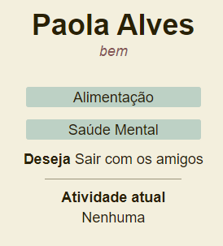
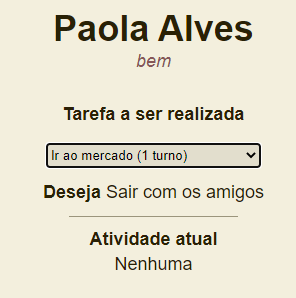

Quarentenados é um jogo de gerenciamento de recursos e sobrevivência.
No jogo, você controla as ações de uma família de 4 pessoas que entram em quarentena assim que um vírus extremamente perigoso começa a contaminar as pessoas próximas a eles.
Você deve prestar atenção no estado de todos os personagens, cada uma das ações que você toma pode afetar a saúde ou o bem estar deles.
Ao clicar no botão "Designar tarefas" você controla o que cada personagem fará durante aquele turno. Todas as ações tomadas pelos personagens tem efeito direto na saúde deles ou na quantidade de recursos na casa.
Cuide dos personagens doentes e mantenha todo mundo alimentado para vencer o jogo!